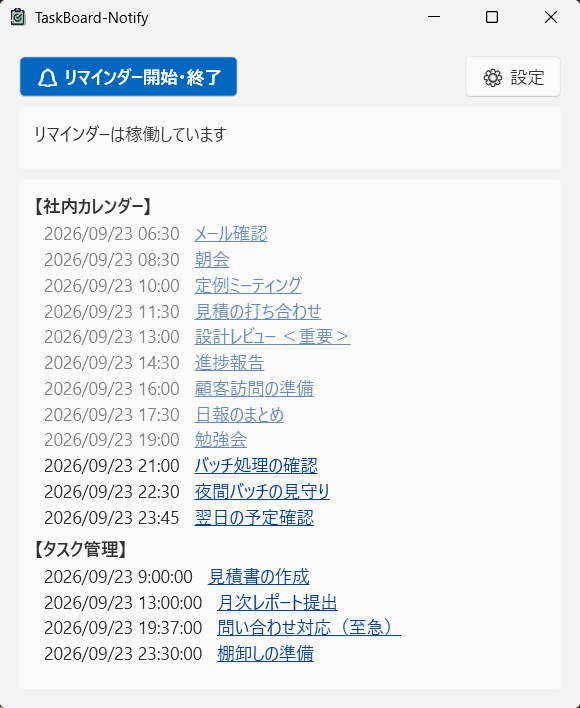
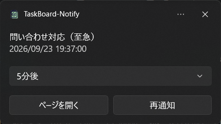
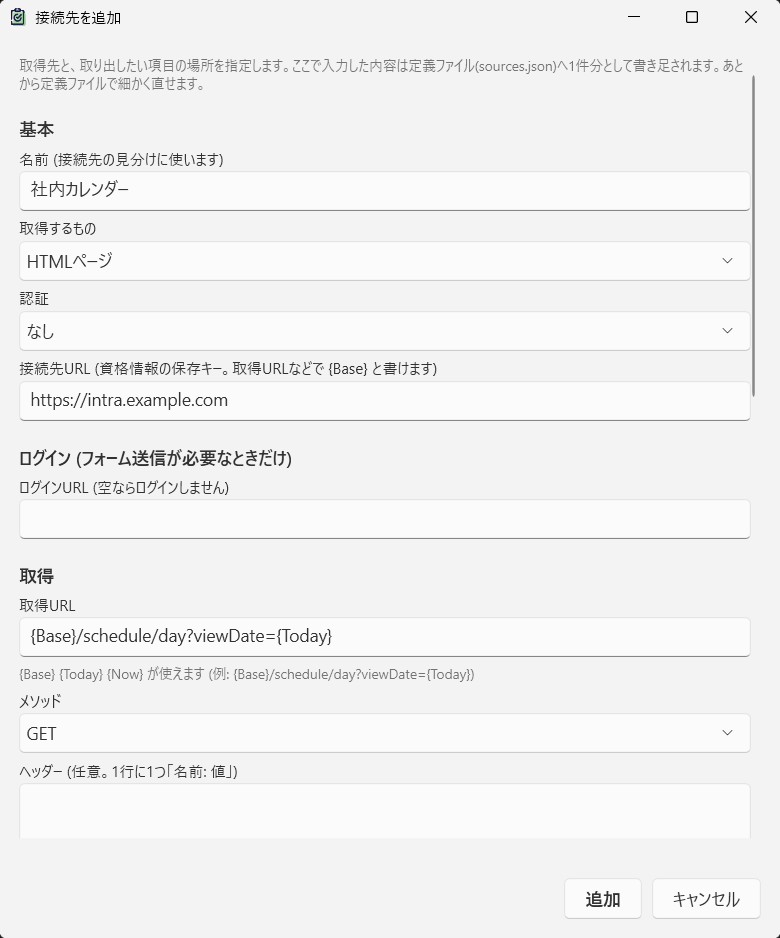
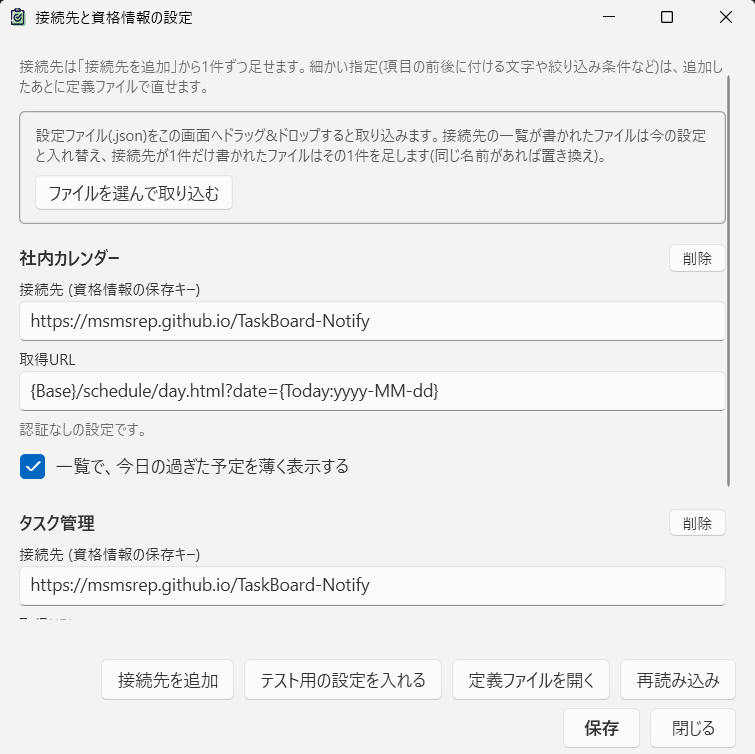

TaskBoard-Notify is a tray app that periodically pulls schedule items and tasks from your company calendar or task management site, and lets you know with a Windows toast notification before the start time. Where to fetch from and how to read it are set in the settings, so the sites you already use can become notification sources as they are.
Windows 10 / 11 ・ No account needed ・ Nothing is sent to the developer's servers


No need to keep your schedule open in the browser — Windows tells you when it's time.
Set how many minutes ahead to notify for each source. From the notification, put it off with "Remind again" or jump to the original page with "Open page".
HTML tables are read with CSS selectors, and JSON APIs with paths. No need to wait for dedicated support — add new sources with settings alone.
Add as many sources as you like. The main window lists items from today onward by time for each source, and overdue items stand out at a glance.
Supports form login, user name and password, and API keys. Passwords and API keys are encrypted with Windows DPAPI and stored on your device.
Once started, it sits in the system tray and keeps fetching and notifying in the background.
The screenshots show the Japanese display.
Fetched items are listed by date and time for each source. Titles are links — click one to open the original page in your browser.
A few minutes before the start, you get a notification with the title and time. If you're busy, choose a time to be reminded again; to check right away, use "Open page" to go to the details page.
Just enter what to fetch (HTML page / JSON), the authentication method, the URL, and where the items you want are. URLs can use placeholders such as {Today} and {Base}, so you can follow pages that change by date.

Source definitions are all in a single sources.json. Drop a prepared settings file onto the window and the import is done. Handy for sharing the same settings across a team.

We recommend checking how it works with the test sources first, then connecting the sites you use.
Install and start it, and it sits in the system tray. It can also start automatically when you sign in.
"Settings" → "Add test sources" adds two sources that read this site's test data. No authentication needed.
Register your real calendar or task management site from "Add source". Remove the test sources with "Delete".
How to write sources.json when connecting to a real service. Here we use the Pleasanter API as an example.
Fetches records where you are the assignee or manager and whose completion time is today or earlier, and notifies you 10 minutes before the completion time.
CredentialTarget to your Pleasanter URL, and the 123 in Url to the site ID of the table you want to fetch{ApiKey} is{ "$json": { … } } are sent as a JSON string (for APIs that take filter conditions as strings){Today} is replaced with today's date, so the filter range moves forward every dayRunTimes, and replaces the list each time with ReplaceAllDrop the edited file onto the "Settings" screen to add this one source to your current settings. Because it fetches with POST, a confirmation is shown when adding. (The comments and the source name in the file are in Japanese.)
{
"Version": 2,
"Sources": [
{
"Name": "プリザンター",
"Kind": "Json",
"CredentialTarget": "https://pleasanter",
"Credential": "ApiKey",
"Request": {
"Url": "{Base}/api/items/123/get",
"Method": "POST",
"ContentType": "application/json",
"BodyJson": {
"ApiVersion": 1.1,
"ApiKey": "{ApiKey}",
"View": {
"ColumnFilterHash": {
"and_Main": {
"$json": {
"and_Filter1": {
"$json": {
"CompletionTime": "[\"2026/01/01 00:00:00,{Today} 23:59:59\"]",
"Status": "[100,150,200,300,910]"
}
},
"or_Filter1": {
"$json": {
"Owner": "[\"Own\"]",
"Manager": "[\"Own\"]"
}
}
}
}
},
"ColumnSorterHash": {
"CompletionTime": "asc"
}
}
}
},
"Json": {
"ArrayPath": "Response.Data",
"IssueId": {
"Path": "IssueId",
"Prefix": "{Base}/items/"
},
"Title": {
"Path": "Title"
},
"Time": {
"Path": "CompletionTime",
"AsDateTime": true
}
},
"OnlyFuture": false,
"ReplaceAll": true,
"IntervalSeconds": 60,
"RunTimes": "9:00,13:00,16:00",
"NoticeMinutesBefore": 10,
"DimPastToday": false
}
]
}Data for notifications travels only between your PC and the sources you specify.
No user registration, no usage analytics, no automatic log sending. The App communicates only with the sources you configure.
Passwords and API keys are encrypted with Windows DPAPI. No one but the same Windows user can decrypt them.
Fetch methods that might change the other side's data, such as POST, PUT and DELETE, ask for confirmation before being set.
For details, see the Privacy Policy.
TaskBoard-Notify is developed and operated by an individual. Optional support is welcome to help with ongoing updates and improvements. Your support is a great encouragement.
Support is an optional donation with nothing in return. There are no rewards, and the App's features are the same whether or not you support it.
TaskBoard-Notify is available on Microsoft Store.